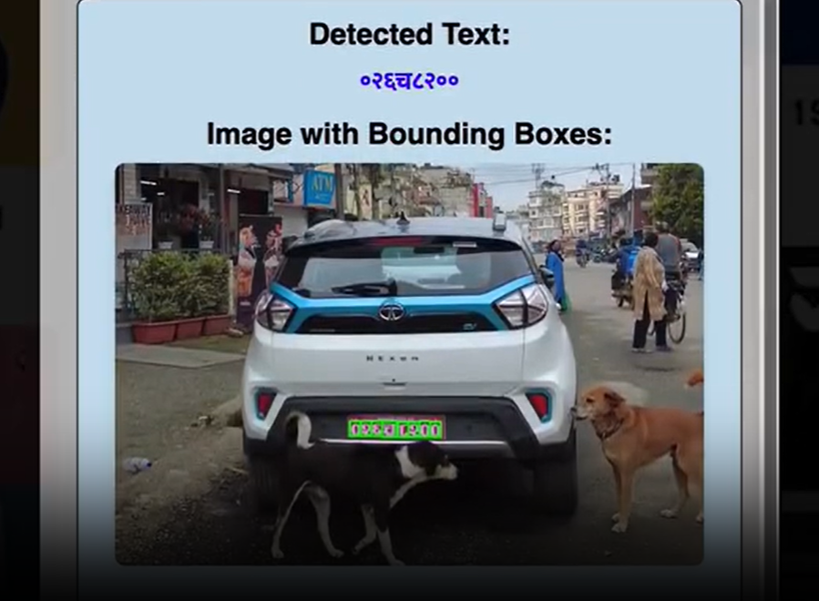
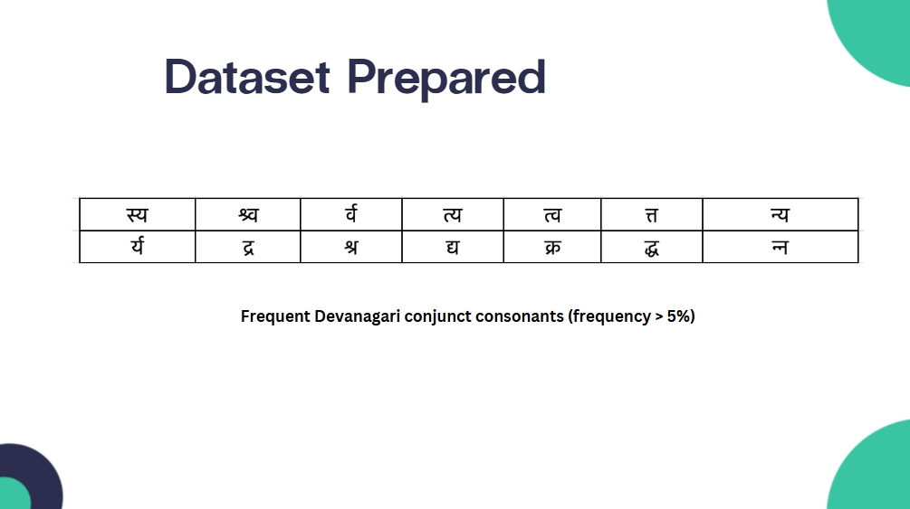
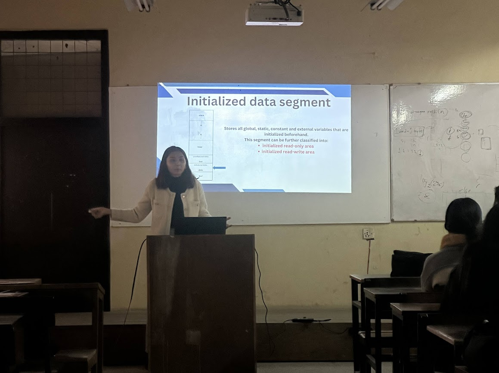

About Me
Sandhya Baral
Computer Engineer · Researcher · Machine Learning Enthusiast
Hello, I am Sandhya Baral, a Machine Learning Engineer and Pulchowk Campus graduate specializing in computer vision, natural language processing, and pattern recognition. My work bridges the gap between theoretical research and practical application, transforming cutting-edge algorithms into real-world AI solutions—such as advanced Devanagari script recognition systems. Beyond my technical endeavors, I am deeply committed to cultivating the tech community through active mentoring and volunteerism. Looking to the future, my overarching goal is to pioneer advancements in 3D representation learning, biomedical image analysis, and privacy-preserving machine learning. Whether you are an academic investigator pushing the boundaries of research or an industry innovator navigating the complexities of scalable AI, I welcome the opportunity to connect. Let us collaborate to architect transparent, high-impact systems that shape the future of artificial intelligence.
Research Interests lie in:
- Computer Vision & Generative AI
- Biomedical Image Analysis & Clinical AI
- Privacy-Preserving Machine Learning (PPML)
- Interpretable Machine Learning & Transparent AI
- Data-Centric AI & Pattern Recognition
Work Experience
Python Developer / Machine Learning Researcher
Digital Age Nepal
- Model development for Time Series Anomaly Detection on large-scale financial data
- Engineered OCR-driven Document Information Retrieval systems for citizenship and cheque processing
- Object Detection and Pattern Recognition techniques for Stamp and Signature detection
- API Development and robust Machine Learning Application Pipelines handling
Education
Bachelor of Engineering in Computer Engineering
Pulchowk Campus, Institute of Engineering (IOE), Tribhuvan University, Nepal
Final year project (Handwritten Devanagari Character Recognition: Dataset Creation & Performance Benchmarking using Transfer Learning)
Higher Secondary Education — Science & Mathematics (+2)
Motherland Secondary School, Nepal
Secondary Education (SEE)
Motherland Secondary School, Nepal
Publications
Character Recognition of Nepali Number Plate
Information Systems for Intelligent Systems, A. Iglesias, J. Shin, N. Bhatt, and A. Joshi, Eds., vol. 1744, Springer, 2026.
View Publication →Projects

Character Recognition of Nepali Vehicle Number Plate
Developed a vehicle license plate detection and recognition system tailored for real-world Nepali datasets. Implemented a two-stage pipeline using YOLOv8 for plate localization, followed by deep CNNs with transfer learning for Nepali script character recognition under diverse real-world conditions.

Artifuse: Image Inpainting with AI
Designed and deployed an end-to-end intelligent image inpainting system using conditional GANs (Pix2Pix) for high-fidelity reconstruction of masked or corrupted image regions. Integrated deep learning pipelines with a full-stack web deployment for real-time, interactive inference.

Handwritten Devanagari Character Recognition
Developed a novel dataset for handwritten Devanagari conjunct consonants, extending the existing character set for richer linguistic representation. Applied transfer learning with deep CNNs to achieve state-of-the-art accuracy on handwritten Devanagari character recognition benchmarks.
Volunteering & Community

The Zerone — Event Coverage Head
Technical Magazine, Pulchowk Campus
Led event coverage for The Zerone, the student-run technical magazine of Pulchowk Campus. Documented hackathons, tech talks, and student initiatives — including CIT (Children in Technology) — through writing and photography, preserving institutional memory and inspiring future engineers.

Children in Technology (CIT)
Pulchowk Campus CE & Worldlink
Participated in a collaborative initiative between Computer Engineering students and Worldlink to spread digital awareness across all provinces of Nepal. Traveled to remote communities to introduce children — many seeing a computer for the first time — to the possibilities of technology and the internet.

Pulchowk Girls — Impact Marathon 2.0
Pulchowk Campus
Co-organized a 5 km community marathon under the Pulchowk Girls initiative, advocating for obesity reduction and active lifestyles. Managed route planning, coordination with local authorities, and volunteer stations, fostering community engagement among students, faculty, and the public.

Teaching Instructor — LOCUS, Pulchowk Campus
Advanced C · Girls to Code · Software Fellowship
Delivered Advanced C programming sessions and mentored participants in the "Girls to Code" initiative — a program dedicated to empowering women in technology. Also contributed to the Software Fellowship at LOCUS, Pulchowk Campus's annual technical festival, guiding students through hands-on software development.